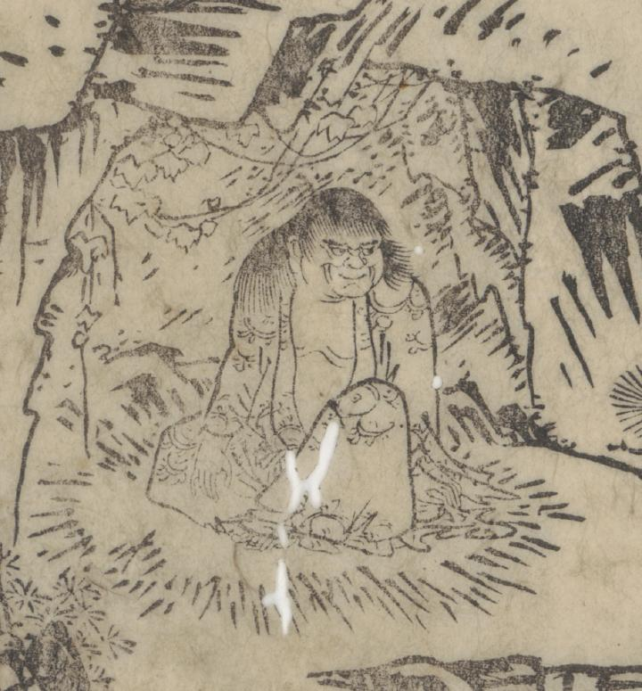

← 图鉴索引

山の洞穴に座る鬼のような姿の鬼童丸が描かれている。
著作者：岡田玉山／出典：親書誌：U426_nichibunken_0432：繪本頼光一代記／日付：2016／資源識別子：U426_nichibunken_0432_0018_0000
Copyright (c)2010- International Research Center for Japanese Studies, Kyoto, Japan. All rights reserved.